Your first map: a room to walk in
From an empty map to a room you can walk through in the game: brushes, textures, caulk, a light, the player start, the optimizer, building with the progress window, walking through it in the editor - and the .pk3 for the game.
Every picture on this page was taken while the program did exactly these steps, and the self-test checks the result every time: the room builds without a leak, the player stands at the start and can walk, and the .pk3 holds the map. The menus and shortcuts are those of NetRadiant-Custom, so other mapping tutorials fit as well - the page The map editor explains the windows.
Steps#
- 1
Set up the game. Switch the mode bar to Map Editor. The editor uses the game the program is set up for; its folders come from the program settings. Edit > Preferences, page Game, shows the game, page Paths the engine path (empty: taken from the program's game folders).
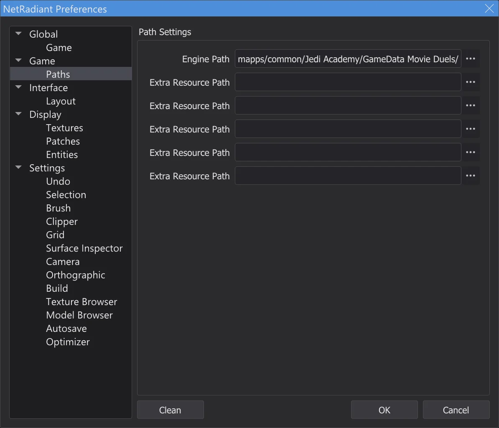
Preferences, page Paths. - 2
New map. File > New Map starts an empty map - only the worldspawn. Zoom the 2D view out a little with the mouse wheel.
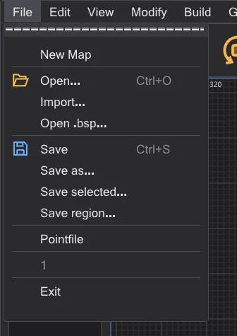
The File menu. - 3
Draw a brush. In the 2D top view, drag with the left mouse button from one corner to the other - here from -256 -256 to 256 256, a box 512 units wide. Its height comes from the work zone (at first -64 to 64).
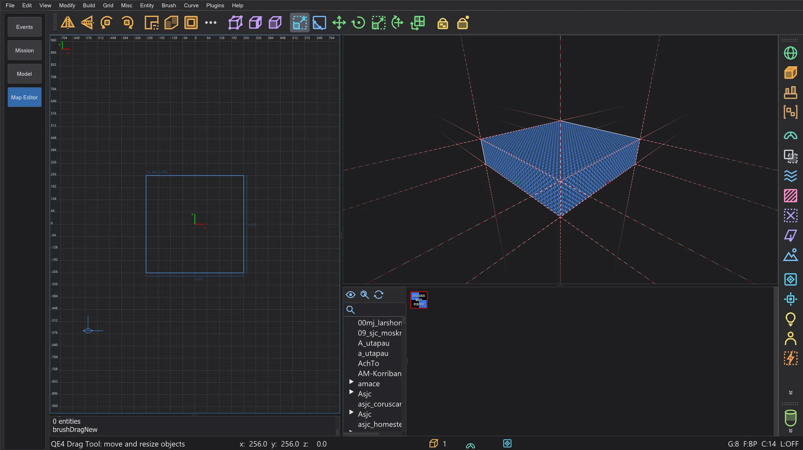
The new brush, selected (red). - 4
Make it taller. Num 1 switches the 2D view to the front view (XZ). Grab just above the top edge and drag up: the top face follows on the grid. Here to 192 - the room is now 256 high. Num 7 goes back to the top view.
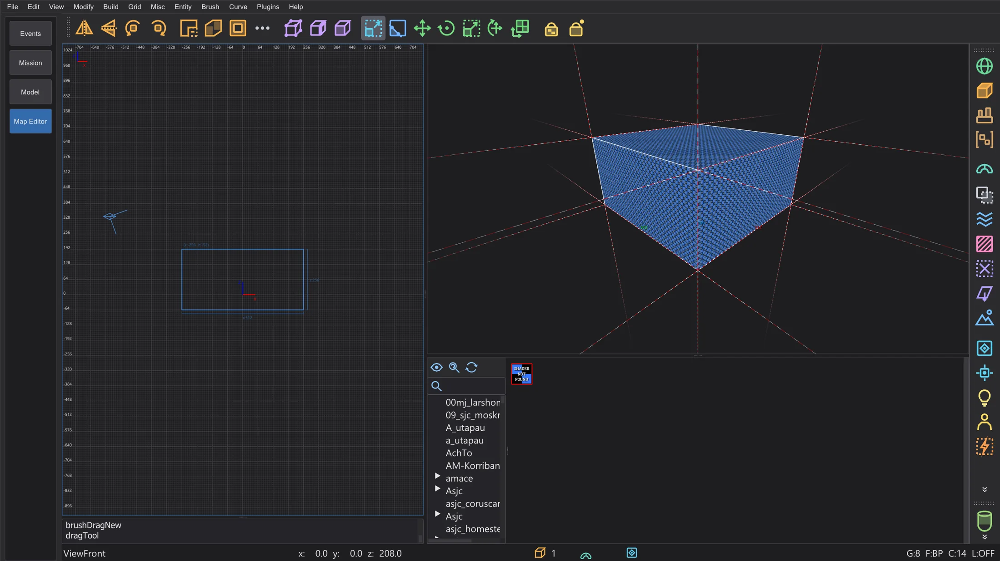
The front view: the brush is now 256 high. - 5
Texture. Double-click a folder in the tree of the texture browser and click a texture with the left mouse button: every face of the selected brush gets it. Pick something without transparency for the walls.
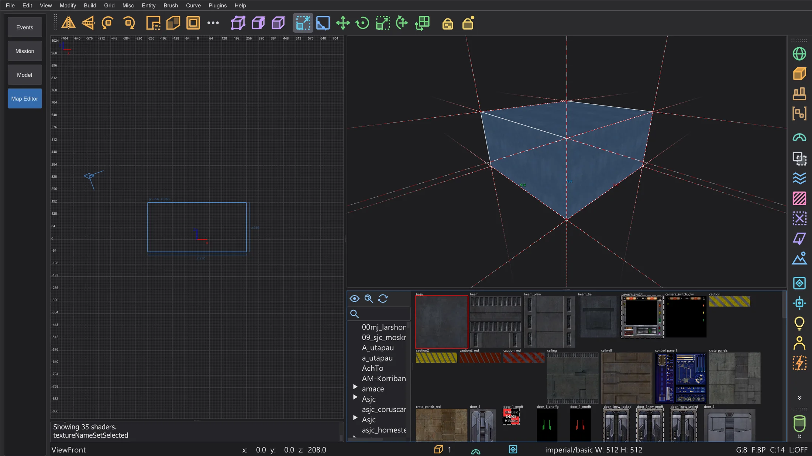
The wall texture on all six faces. - 6
Hollow it out. The toolbar button CSG Tool opens the CSG tool. Leave the thickness at 16 and switch the caulk button off for now (AutoCaulk does that later), then press Hollow::pull faces: six walls 16 thick grow outwards around the room, and the inside stays exactly the box you drew. The toolbar button Room (Make Room) does the same with the grid size as thickness.
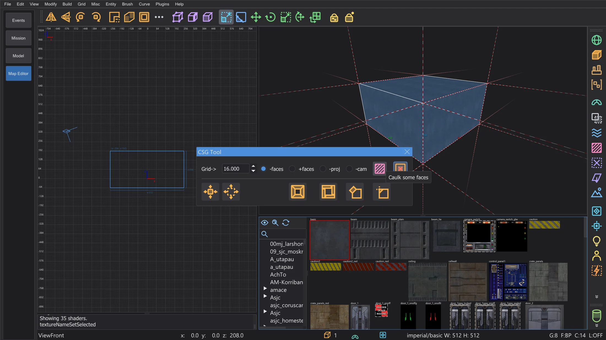
CSG Tool with the caulk button off. - 7
A floor texture. In the front view, Shift + left click on the floor selects only the floor brush; click a floor texture in the browser. Esc clears the selection.
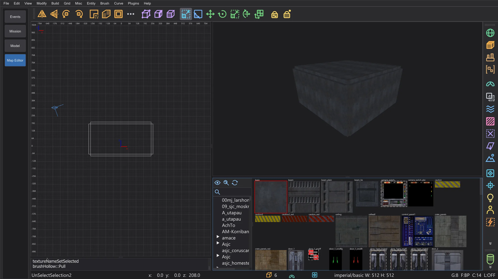
The hollow room: six wall brushes. - 8
A light. Right-click inside the room in the 2D view: the entity menu opens. light asks for the intensity (300 is a good start) - OK places it where you clicked.
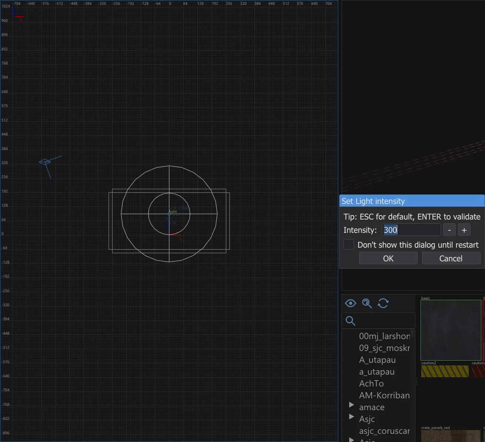
Set Light intensity. - 9
Where the player starts. Right-click near the floor: info > info_player_start. Without it the game does not know where to put the player. Its box stands on the floor.
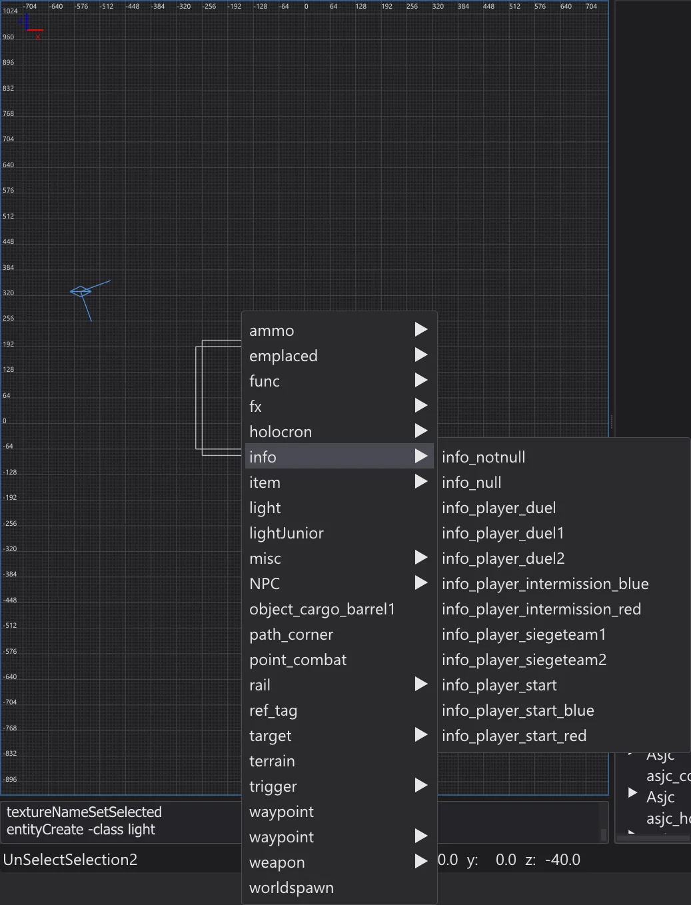
The entity menu, submenu info. - 10
Save. File > Save as - for example
meinekarte.mapin a foldermapsof your own, outside the game folders. The name of the file becomes the name of the map in the game.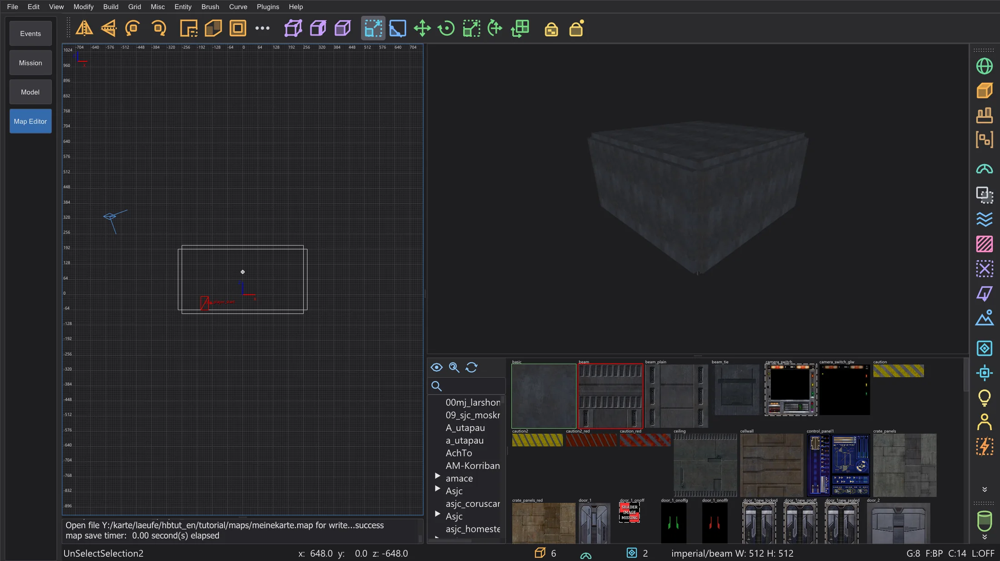
The saved room in the editor. - 11
Caulk the outside. Faces nobody can see still cost lightmap space and drawing time. Fly the camera into the room, drag a rectangle around the whole room with Shift + right mouse button in the top view and press F4 (Brush > AutoCaulk Selected): every face that cannot be seen from inside becomes caulk. Building in caulk from the start works too: give new brushes the caulk texture and texture only the faces you see.
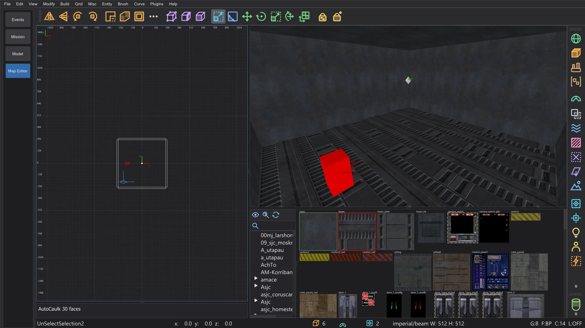
After AutoCaulk: the camera inside the room. - 12
Check it. Build > Optimizer counts the game's limits and looks for build problems before you compile. A green room has nothing to fix.
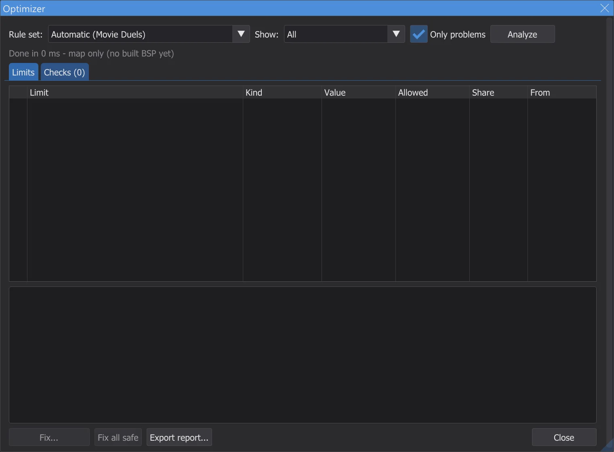
The optimizer for the tutorial room. - 13
Build. Build > [Final] Fast runs q3map2 three times - BSP, VIS and the light with bounce. The progress window shows the stage, the progress and the time left. If the map leaked, the console says so in red and a line in the 2D view shows the way out - see Map editor: compiling the map.
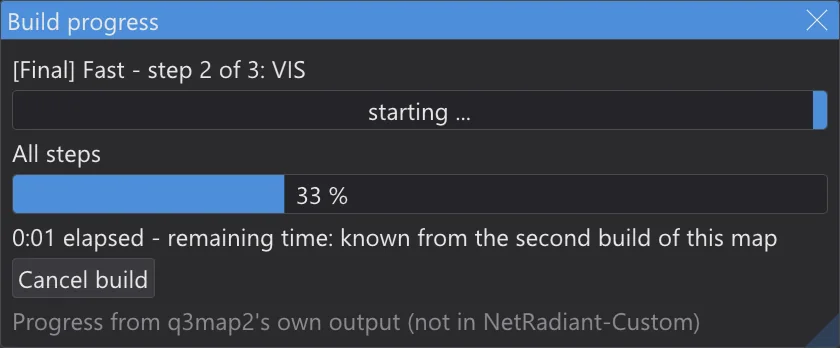
The progress window during the build. - 14
Walk through it. View > Play: start at info_player_start and then Play in editor (F6): you stand at the info_player_start and walk with W A S D, jump with Space; Esc ends. This works even without compiling - the collision comes straight from the brushes (see Play in the editor).
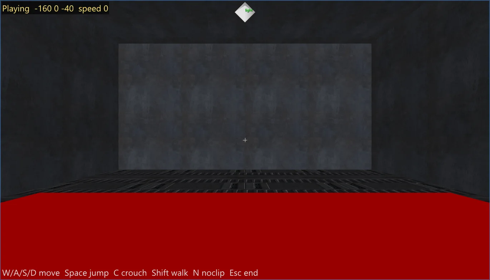
Walking through the room in the editor. - 15
Into the game. Build > Pack map as .pk3 packs
maps/meinekarte.bspintomeinekarte.pk3next to the .bsp. The program never writes into the game folders - copy the .pk3 yourself intoGameData/base(Jedi Academy, Jedi Outcast) or into the folder of your mod (for example Movie Duels). Start the game, open the console with Shift+~ and typedevmap meinekarte.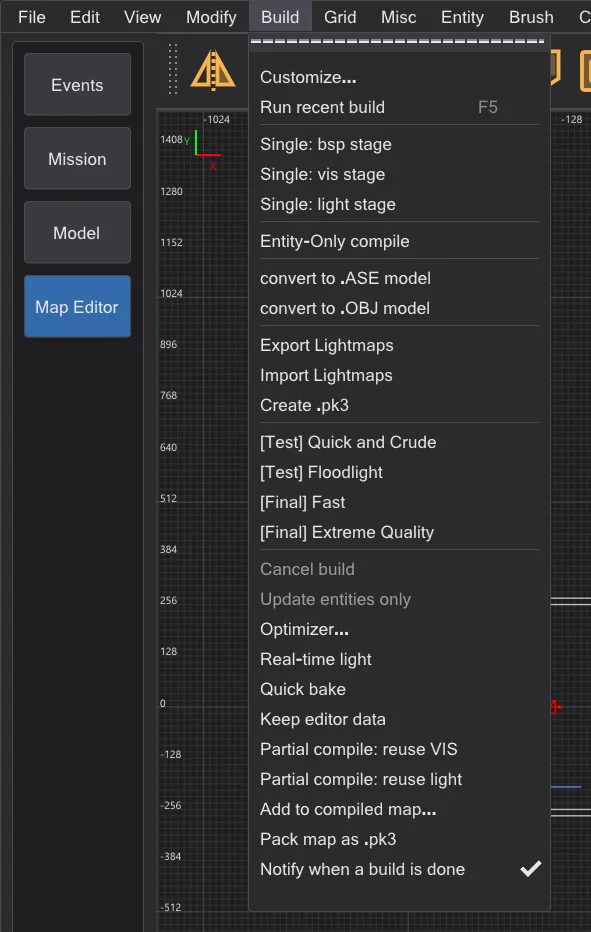
Build with Pack map as .pk3 (not in NetRadiant-Custom).


Where to go next#
- Brushes, clipper, patches and the CSG tools: Map editor: building tools.
- Build menu, leaks, portals and the build folder: Map editor: compiling the map; faster rebuilds: Map editor: build progress and partial compiles.
- Limits of the game and fixes: Map editor: optimizer and limits; the light preview in the camera: Map editor: speed and real-time light.
- Terrain, logic view, mirror mode and playing in the editor: Map editor: terrain, playing, logic, mirror and more.
- A cutscene on your map: Your own mission: take-off on Taspir.